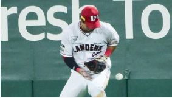
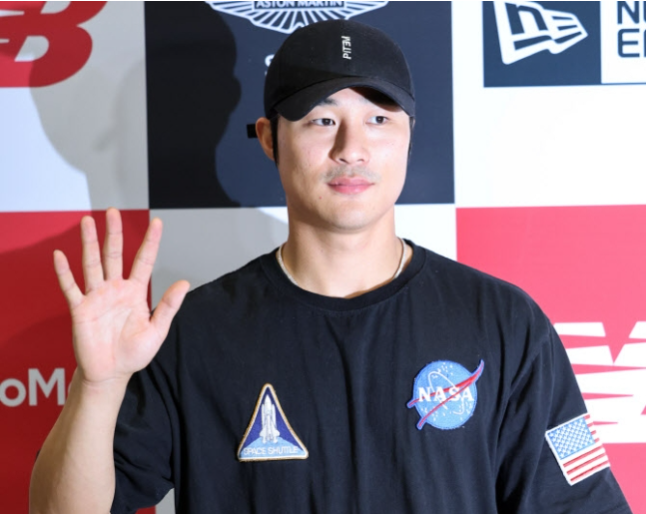
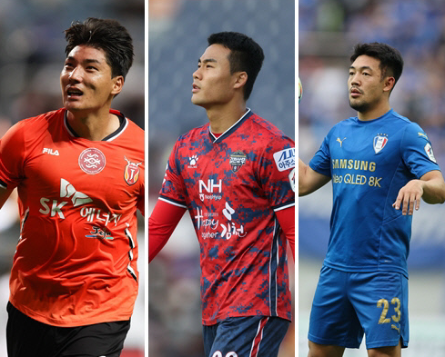

|  |
포구실책, 패스트볼, 타구방향 오판… 수비 흔들 SSG, 마주한 것은 25.6% 우승 확률 |
| 큰 경기의 압박감이었나? SSG 랜더스가 정규리그 우승팀의 잇점을 살리지 못하고 1차전을 내주었다. 지난 1일 인천 SSG랜더스필드에서 열린 2022 KBO리그 한국시리즈 1차전에서 키움 히어로즈에게 6-7로 무릎을 꿇었다. 선발 김광현은 4회까지 압도적인 구위로 키움 타선을 노히트로 잠재우고 있었다. 패배의 단초는 외야수들의 어설픈 수비였다. 이것이 이날 경기의 모든 것을 엉키도록 했다. |
|  |
'금의환향' 김하성, 키움 KS 1차전 승리 소식에 "진짜요?" 반색 |
| 미국프로야구 메이저리그(MLB) 진출 2년 만에 당당히 리그 정상급 유격수로 발돋움한 김하성(27·샌디에이고 파드리스)이 금의환향했다. 올 시즌 최고의 시즌을 보낸 김하성은 2일 새벽 인천국제공항을 통해 입국해 한국 땅을 밟았다. 새벽 이른 시간에 귀국했음에도 수많은 취재진이 몰려 김하성에 대한 높은 관심을 입증했다. |
|  |
시작된 이적시장…주민규·박지수·이기제, FA 최대어들이 움직인다 |
| 길었던 시즌이 마무리되고, 이적시장이 본격적으로 시작됐다. ‘보스만 룰’로 인해 계약만료 6개월 전부터 현재 소속팀과는 물론 타팀과도 협상이 가능하다. 프로축구연맹이 일찌감치 공개한 2023년도 FA 예정 선수는 K리그1,2를 통틀어 266명이다. 우선 주민규(제주 유나이티드)의 거취가 관심 대상이다. 그의 거취는 열려 있다. 주민규는 2년 연속 득점왕에는 실패했지만, 최근 2년 동안 K리그1에서 39골(8도움)을 몰아넣었다. 득점력 하나만큼은 인정을 받았다. |